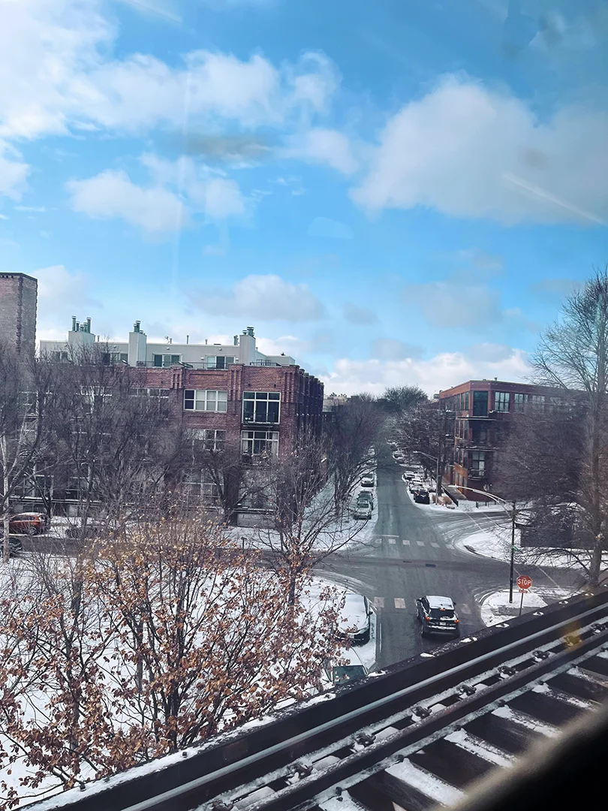
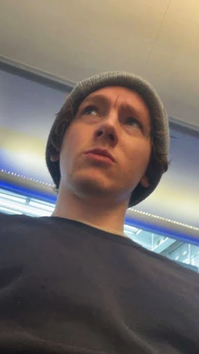
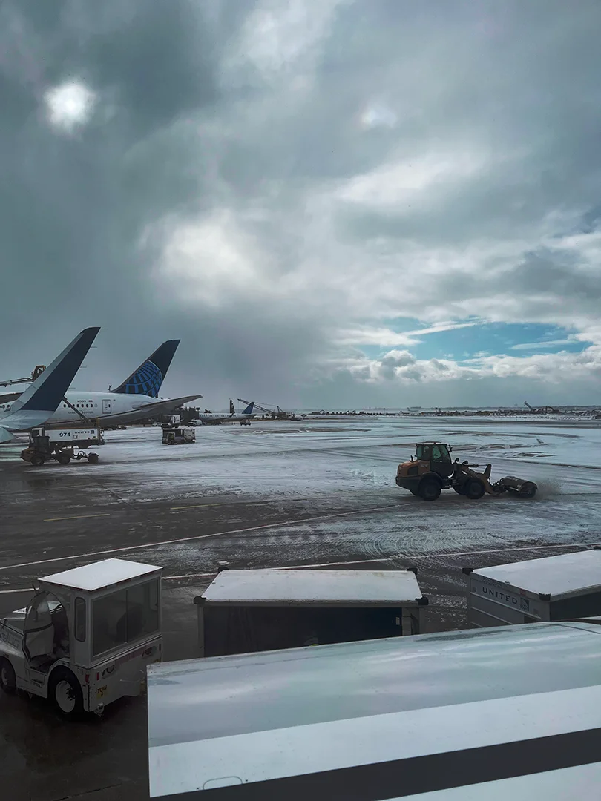
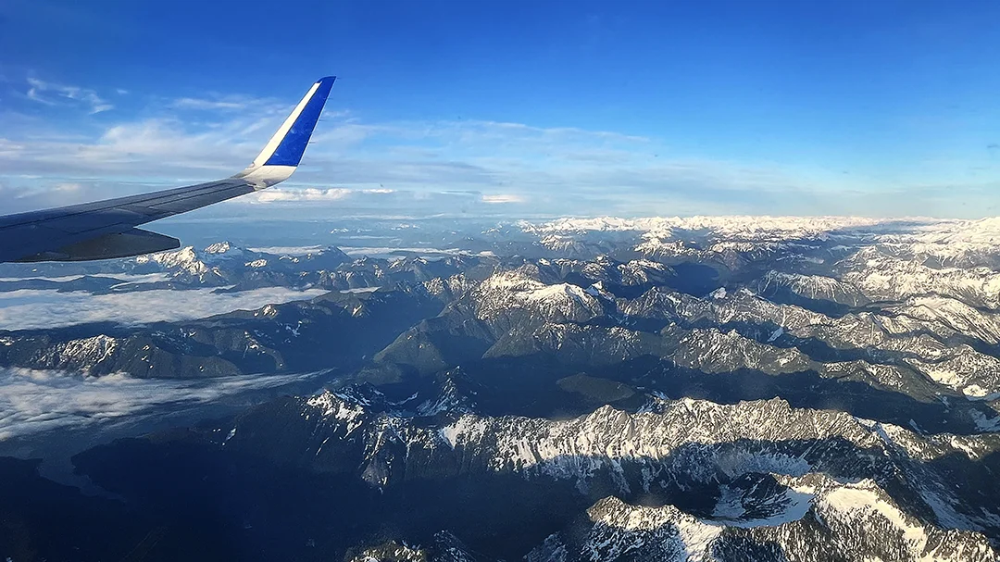
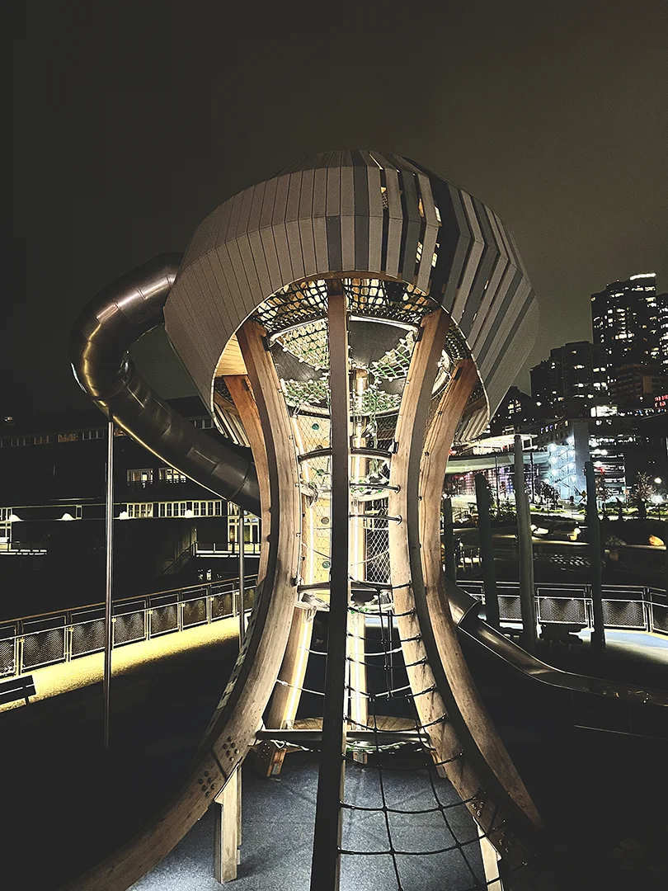
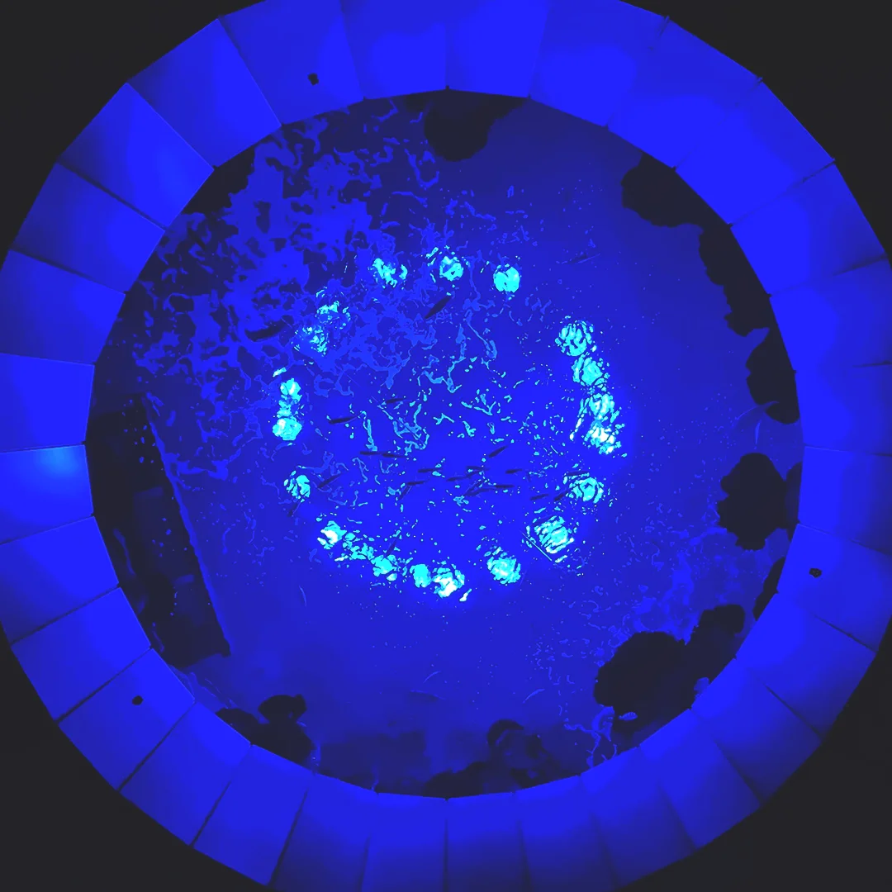
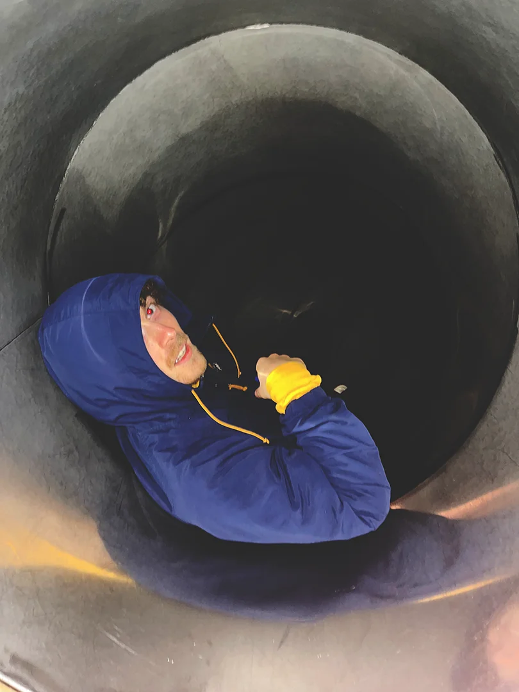

Day 1 - Travel & Arrival
Morning Travels
My day started at 5AM. I gulped down my yogurt while furious researching what I could and could not bring on the plane. Toothpaste? Fine. If they chuck it out no biggie. How many pairs of shoes could I fit? Will the bottle opener raise eyebrows? Rhett texted me. "Are you on your way?" I assured him I was about to leave. He was not coming to pick me up, so I hauled my pillow, overstuffed duffel, and bike downstairs. When I first mounted my bike, I fell right over. I gathered myself, made sure nothing was broken, and somehow willed the bike to balance, holding the duffel bag and pillow over the aero bars. That might have been the windiest and coldest bike ride I have ever taken to Dale.
When I arrived at 6:30, Rhett was packing his final items. He mentioned how I annoy him sometimes. I agreed. We did one final check and hustled out the door to the train station. Of course the most straightforward route was under construction, so we had to go all the way north to Watterson. We made it to the station and I had to relieve my bowels. Thankfully, our train was running late by about 20 minutes. I conducted business, and went back to the seating area. Rhett and I talked while waiting, and I performed some light yoga.
Our train eventually pulled into the station, and once boarded, we found a pair of vacant seats. On the way up, it started snowing. The cafe car was open, so I went to go grab a coffee. The first dimes of the day. I ended up chatting with the tender, asking him about the travelling and the schedule. He mentioned working for Amtrak for a number of years and how his assignments were usually for days at a time. He told me how the train goes out to California, on the move for about ten days round trip. We finished conversation just as the train was stopping for another train to pass. It was still snowing and we were running behind schedule. Rhett was starting to get a little anxious. We discussed being in sports and on a team in high school while we felt the train get moving again.
Chicago, the Blue Line, and O' Hare
We arrived in Chicago late, but Potbelly was on our way to the blue line, so we stopped in for a bite. A guy asked us for cigarettes, but we weren't carrying any to give him. Eventually he got one and started smoking in the Potbelly lobby. They kicked him out while Rhett and I ordered our wraps. These were our next nickles spent.
Rhett had downed his wrap, and I decided to save half of the wrap and the cookie for later on the blue line. It was very cold and windy on the way. Rhett was muttering about not having appropriate shoes for the journey. I didn't blame him. Pumas seem like they might make the socks cold and wet, especially trekking through snow.
We found the entrance to the blue line, and Rhett had done this journey a few times so he went through the gates pretty smoothly. I had just ported my credit card to Apple Pay recently, so I wasn't quite used to it. I got stuck, but the guy tending the entrance helped me out. Once the gate accepted my virtual payment, we raced down some steps and waited for the blue line.

The blue line was scary quick. It both picks up speed and brakes quite rapidly. We didn't see too many shifty characters, but there were a few characters who broke the rule to go between cars while the train was moving. We didn't get bothered, however, and I munched on the rest of my Potbelly while looking out the window.
We made it to the airport with about an hour until boarding. We had a bit of confusion over where we check our bags, but we got through the bag check without a hitch. We started walking the wrong way to get to our gate, but we eventually found where to go. It seemed there were quite a few people at the gate. We managed to find two open seats, set our bags down, and separated to do our own tasks. I went to go locate a drink. It seemed like an enjoyable start to our adventure. I trotted around the airport until I found a bar, sat down on a stool, and channelled my inner Jack Sparrow. I conversed with a gentleman to my right named Tim, learning he was from Charlotte and not drinking a $14 shot of rum. In fact, he much preferred Miller High Life. We chatted for a bit about sports and our homes, until it was time to slink back to the gate.

We were section 4, so we were close to the last passengers to board. We thought we were going to have a row to ourselves, but literally the last guy to board grabbed the window seat. But it was okay because he was cool, making us laugh and talking about crazy black boxes you can plug into the TV to get every channel, movie, and TV show. David worked in real estate and taught other people how to become a part of the real estate industry. He also mentioned doing plenty of drugs as a younger man and the wonders of the dna tests on ancestry.com.

Discussion between David and us died down, so Rhett and I went back to watching our movies. I selected Rush and Rhett was invested in Ford v Ferrari. David also accommodated my request to take a picture every now and then, especially while we were over the mountains in Montana. We touched down three and a half hours later from takeoff. The first thing Rhett said once we got off the plane was "The air smells different here."
Arriving in Seattle

After relieving ourselves, we located the shuttle to take us to the rental car service. The cheapest one to book was Dollar, so that is what we ended up with. After finishing paperwork, we were looking at a newer, fresh-looking black Corolla. Before we got in, we each took a quick run around the parking garage. I familiarized myself with the car and the controls, Rhett put on Rozwell Kid, and we shot out of SeaTac towards Seattle.

While the cars may be quick, the stoplights sure aren't. Once we got to the city, there was a lot of waiting. Rhett navigated as best as he could, but sometimes the roads were too full to make every turn. Finally, we turned into an alley and found ourselves on Pike Street. We were right next to the hostel... but there was no parking, so we went in search of a parking garage. We found one, lowered ourselves into a spot, gathered our bags, and headed out back to the hostel.
The Green Tortoise, Barbara, and the Pier

We stayed in the Green Tortoise. I did my research before leaving for Seattle, and it seemed like the most inviting of the bunch. They also had events scheduled every night. The reviews were super positive and they offered free breakfast, which we found out more about the next day. We arrived at the front desk, and after impressing the lady behind the counter, she showed us our room. We were staying in a room with eight beds. We also bought towel service and a lock, set down our stuff, and claimed our beds.
After settling in for our stay, Rhett suggested we find some fried food we could dip in ranch. We found a pub nearby with exactly the remedy for our rumbling stomachs. We sat down next to a lady with a plate of fries and obviously a few dirty martinis in. Rhett mentioned those fries looked good and the lady offered them to us. Rhett accepted, and we all fell into conversation.

Barbara is a teacher, fundamentally in creative writing. She lives in Seattle and has a strong case of "the economy is about to collapse". She had many interesting things to say, and found it hard to believe our generation knows who Frank Sinatra was. We shone light on our musicianship, and it all suddenly made sense to her. Barbara sympathized with our girl problems, talking about how the phones and social media were to blame. She had a few more drinks and asked for a glass of olives to munch when the bar stopped serving food. Eventually, she gave us her card (she was writing a book) and we said our farewells.
Rhett and I were feeling great after the conversation and food, and the first thing we noticed outside were the stairs. They seemed to lead down to the pier, and so we decided to check it out. We found ourselves next to a jungle gym sort of thing. It seemed pretty new and there were fun objects to climb, including a slide to go down. We spent some time monkeying around, went down the slide, and spotted the aquarium.
Rhett and I trotted over to discover we could see into the tank above the entrance. We saw plenty of fish, a few sharks, and a ray or two.
Once our necks were aching from the 90 degree angle bend necessary to look into the tank, we walked a little farther down the pier. Rhett spotted some fire pits and a giant chess board. We noticed how nice the weather was, so we stopped at the end of the pier to discuss Tim Ferriss, saunas, and our future. We guessed how many people were in the part of the city we could visibly see behind us, and then headed back to the hostel.
The day ended with a shower and some yoga, and then we turned in. It was a thrilling travel day, and we had much more to come.